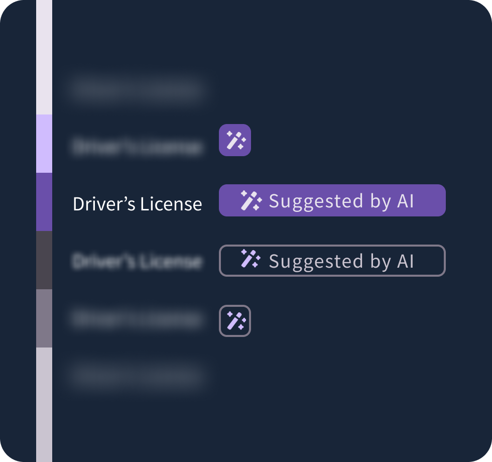
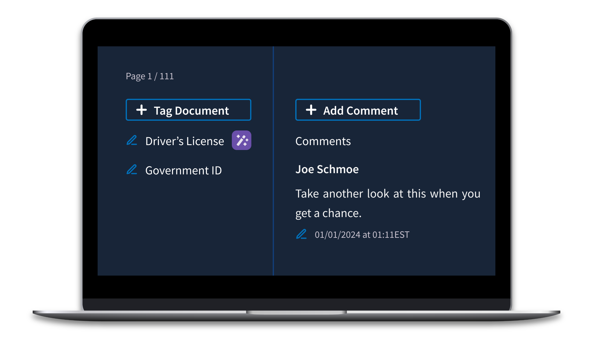
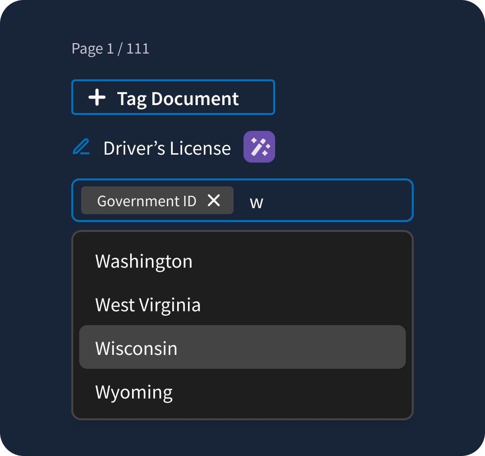
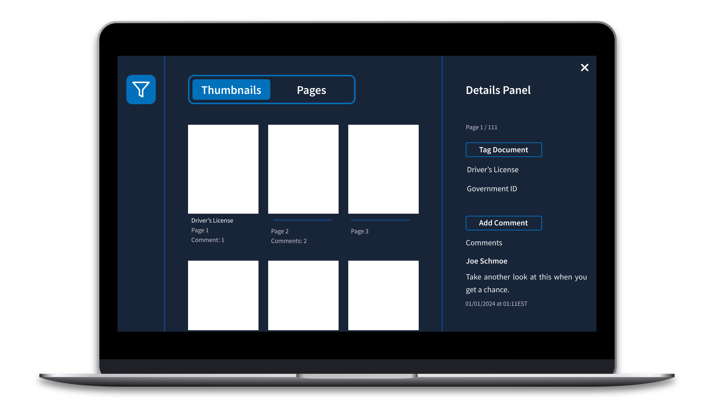
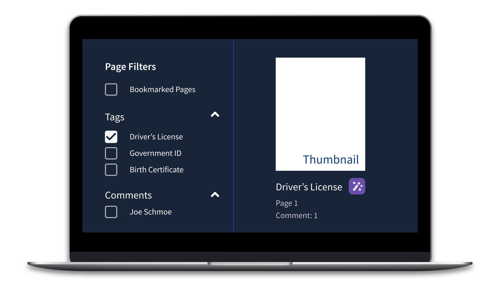

PDF Management App Redesign with AI Components
For six months, I led a small team of designers and developers to redesign a file management app for a federal agency. As a UX consultant for Publicis Sapient, I redesigned a PDF viewer and editor integral to client case processing. This project included significant UX redesign, a complete UI update — including the creation of a dark mode design system — new AI components, and two rounds of usability testing to validate the design.
Images shown are illustrative representations of my design process and do not include actual product screenshots or wireframes due to confidentiality.
Challenge
The PDF viewer used unique UI and UX patterns unlike any other client product, creating a jarring user experience that compounded usability issues with unfamiliarity.
The old PDF viewer was difficult to learn and clunky for even the most experienced users. It used an entirely unique "design system" and unusual UX patterns that had been created ad-hoc by engineers over several years. Even the flow for leaving and editing comments was unique despite a unified commenting flow in the client's official design system.
Opportunity
New case types were introduced in 2023 that increased the number of pages per case from ~50 pages to several hundred pages. In the old PDF viewer, users wasted time scrolling back and forth between pages of interest. We needed a navigation overhaul to address evolving requirements and get ahead of the old app's usability pitfalls.
At the same time, the client had recently introduced a new AI tagging feature to label documents. This new tool had the tech, but needed an interface to go with it. We had the opportunity to revamp an old eyesore to both match design system standards and scale to meet intense new user objectives.
User Research
I created a user research plan that focused on how users navigate the app and their pain points. We combined observation with open-ended questions to get deeper insights. I wrote the script, ran point on user recruitment, and moderated the sessions. Then, I synthesized our findings and presented to stakeholders, sharing insights that earned buy-in for the redesign.
Key Research Findings
Users span multiple career levels with different priorities and preferred ways of working.
Some users scrolled through files, from Page 1 to the end, for a cursory skim before going back to review in detail. Some preferred to flag pages of interest using thumbnails without the full read-through. Others spent time messaging back-and-forth with their direct reports to discuss the documents.
Across the board, users expressed dissatisfaction with the current design patterns for navigation and commenting.
AI tagging was underutilized and unrecognizable from manual tags.
Users reviewed, annotated, flagged, and approved anywhere from 10 to 40 pages of documents at once. Those documents ranged from driver's licenses to federal forms to doctor's notes. Users referred to specific pages of evidence multiple times and scrolled back and forth between pages often. Users could always tag pages with document labels, but had not yet worked with AI tagging.
Users were unaware of new AI features and could not tell the difference between manually and AI-generated document tags.
The manual tagging flow was simply too cumbersome.
Users had to choose tags from a single-select dropdown with hundreds of potential tags and no typeahead. Understandably, they preferred to leave the comment "driver's license" rather than scroll through the dropdown to tag. We knew that we had to fix the tagging pattern to get value out of the new AI tags.
We discovered that users were not utilizing tags — they were using comments instead, finding the tagging system too cumbersome.
The user-generated tagging system was unusable. To promote the AI tagging enhancements, the entire flow had to be fixed.
Solution
We took our research findings and developed a comprehensive redesign that addressed each major pain point:
- Overhauled the tagging system to prominently highlight AI-generated tags, improving transparency and user trust
- Introduced new filters allowing users to narrow down results and find relevant content faster
- Streamlined commenting and tagging workflows to match design standards and increase efficiency
- Improved navigation flows to reduce friction and enhance overall platform usability
Introducing AI Components
This was one of the first and most visible applications of AI in the client's ecosystem, making it critical to set clear boundaries between AI-generated content and user-generated input and establish a design system for AI tools. Initial user feedback on AI was mixed-to-positive, with some users feeling hesitant about the integration. We wanted to set a precedent of transparency, user control, and trust.

We introduced the magic wand icon, an optional AI purple colorway, and an expanding badge component. These visual cues help users identify AI interactions easily and set a scalable standard for upcoming AI tools.
AI tagging could be a big help to these users, but they have to trust it. I'm hopeful that thoughtful design can convince even the most stalwart skeptic to give it a try.
Streamlining Tags and Comments

Our research showed that users often used comments as makeshift tags because scrolling through a long tag list was just too tedious. This workaround was fast but led to files cluttered with pseudo-tag comments, making genuine annotations hard to spot. To fix this, we switched to a typeahead dropdown, making it quicker and easier to find the right tag.

We separated user-generated tags from AI-generated ones, with any edits to AI tags automatically moving them to the user-generated section. To keep improving AI accuracy, we worked with the machine learning team to capture data on any tagging inaccuracies.
Enhanced Navigation

We made the filters and annotation panels collapsible, giving users more control over screen space to suit their workflow. Before, thumbnail previews of each page were hidden in a panel, but widely used for navigating large documents. We elevated thumbnail navigation to the same level as full-page scrolling in the information hierarchy using a view switcher.
While thumbnails are great for at-a-glance navigation, we worried that they would start to blend together in documents with hundreds of pages. We added subtle metadata like comment count and tags to make it easy to spot pages with annotations.
Smart Filtering

Finally, we wanted to address the biggest problem with the old design: too much scrolling. We added filters for both full pages and thumbnails, making it way easier for users to jump to specific sections in the file. Filters also help cut down on visual clutter by letting users hide unrelated content. We fine-tuned the list of filters based on user feedback and tested the updated flow. Users were excited to be able to filter by tags, comments, and bookmarks to engage with only the most important pages.
Usability Testing
I mastered Axure prototyping techniques to create a fully interactive prototype for user testing. We had users complete tasks in the prototype and using the old app.
When we put it in front of users, the new PDF viewer performed significantly better in terms of navigation, and the feedback was overwhelmingly positive. Users especially loved the new commenting system. Some users were looking to fact-check the AI, while others were excited about its potential. Most importantly, all users clearly understood when they were interacting with AI and how to integrate it into their workflows effectively.
Implementation & Handoff
Making the prototype a reality involved a couple new components, updates to the design system, and a navigation overhaul. Intense documentation and close collaboration with developers made it possible.
We added new AI components to the design system and React Storybook. I wrote design specs and tested the new components for Section 508 compliance.
Users were excited to see the client's design system applied to the PDF management app. But there was one thing they wanted to keep from the old design: dark mode. Looking at hundreds of PDFs is hard on the eyes; dark mode soothes and helps them distinguish pages from annotation tools. We created a dark mode version of the design system using design tokens.
Finally, we baked in web analytics to every new feature. Data-driven insights are crucial to understanding the performance of a new design and to inform future decisions. In the future, updates to the PDF management app will be able to leverage analytics in a way that we could not.
Impact
Leading this project was a major responsibility and fantastic learning experience. Speaking with real users to learn about their day-to-day frustrations and motivations was enlightening. I made impactful design decisions ranging from UI updates, to new feature designs, to tagging taxonomy. I presented work to the client in multiple contexts including brainstorming sessions, usability study recaps, and legal reviews. I learned a lot about advocating for design in consulting contexts and how to relate human-centered design principles to business priorities.
And at the end of the day, I am confident that the new product will address real usability issues and scale to accommodate changing business interests.
Key Achievements
Significantly improved navigation performance in usability testing
Established AI design patterns for future client tools
Reduced user frustration with commenting and tagging workflows
Created scalable design system with dark mode capabilities
This project demonstrated my ability to lead cross-functional teams, conduct comprehensive user research, and design complex enterprise applications that balance user needs with technical constraints and business goals.